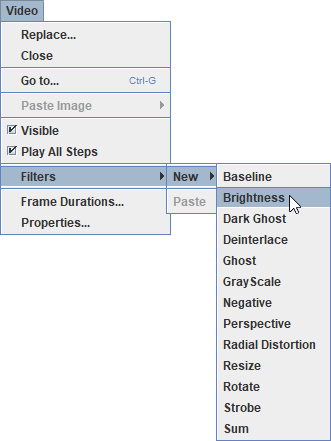

Video filters allow you to modify the video image for special effects or to improve the quality of data obtained from tracks. Tracker's filters fall into four general categories:
Create a new filter with the Video|Filters|New menu. Multiple filters are applied in the order in which they are created and listed in the Video|Filters menu. Existing filters can be temporarily disabled or permanently deleted. Choose Video|Filters|Clear to delete all filters.

Video filters can also be applied by copying an existing filter to the clipboard and choosing the Video|Filters|Paste item. This makes it easy to apply the same filter to multiple videos. To copy a filter to the clipboard, choose the Copy item from the filter's menu (shown below).
Most filters have a properties dialog that enables the user to set filter parameters. The dialog pops up when the filter is created and remains accessible from the Video/Filters menu. Every dialog has a Disable button that temporarily disables the filter so it has no effect.
The brightness filter has adjustments for both brightness (range -128 to +128) and contrast (range 0-100). Changes in brightness affect the RGB components of all pixels equally until minimum (0) or maximum (255) values are reached.
To set a value, use the slider or enter it directly in a field. The Clear button resets the brightness and contrast to their default values.
The deinterlace filter is used to eliminate double images that appear in interlaced videos.

Each frame of a 30 fps interlaced video consists of two fields, odd and even, that are captured 1/60 s apart. Each field contains a complete image with half the vertical resolution of the frame. When played on an interlaced TV the fields are displayed sequentially so the separate images result in smoother motion, but when viewed one frame at a time in Tracker the fields are combined, resulting in a double image. The interlace filter corrects the problem by displaying only one of the fields. Note that this also reduces the vertical resolution.
The strobe filter leaves a trail of images of a moving object much like a strobe photograph. The effect is produced only when the video is played or stepped. The "live" motion diagram that results can be a very effective tool for learning the concepts of position, velocity and acceleration.
The strobe images may be bright objects against a dark background (shown above) or vice-versa. They can also fade away as they recede in time. To set the rate at which they fade, use the slider or enter a value directly in the field. The Clear button clears all current strobe images.
The ghost filter leaves a trail of fading ghost images of moving bright objects against a dark background. It is similar to the strobe filter effect except the ghost images are ghostly grey rather than full color.

The dark ghost filter is like the ghost filter above except that it works with moving dark objects against a bright background.
The grayscale filter converts a color image into a grayscale image. This is useful for extracting brightness data (gray level 0-255) from RGB components. The conversion uses separate RGB weighting factors in the equation:
gray level = (R*weightR + G*weightG + B*weightB) / (weightR + weightG + weightB)

The filter includes standard weighting factors for video and flat-response images but also allows advanced users to define custom weighting factors.
The negative filter produces a negative image in which each pixel RGB component x becomes 255-x. This is often useful when printing, particularly when combined with a brightness filter, since dark features against a light background are often clearer (and use less ink!) than light features against a dark background.
There is no properties dialog for the negative filter since there is nothing to adjust.
The baseline filter subtracts a "baseline" image from the video images. If the baseline is the (unchanging) background in the video scene, the background is eliminated, leaving black. This is particularly useful when using a line profile or rgb region to measure RGB values in spectral or other images contaminated with unwanted background light--simply capture an image or video of the background light alone (i.e., with the spectral light source turned off) and use it as the baseline.

To set a baseline image, use the Load button to load the image from a file or the Capture button to capture the video image currently displayed in Tracker. The Clear button removes the current baseline image.
The sum filter adds video images together (separate RGB components) and displays a fraction of the result. When the Show mean checkbox is selected, the fraction is automatically adjusted to display the mean RGB values of the images. This can significantly reduce the RGB noise in videos of spectra or other optical phonomena.

When the Show mean checkbox is not selected, use the slider or enter a percent directly in the field. The Clear button resets the sum to the current image.
The perspective filter can correct the distortion that occurs when an object is photographed from an angle rather than straight-on. It does so by mapping a distorted plane shape in the input image to a straight-on plane shape (rectangle by default) in the output image. The input and output shapes are adjusted by dragging or autotracking their corners. To use the filter:


The resize filter changes the dimensions of the video image. This is particularly useful for correcting the distortions that result when the non-square pixels in DV-formatted videos are displayed and analyzed in Tracker's square pixel environment. This causes the image to be stretched horizontally. The stretch can be corrected by resizing the image from 720x480 to 640x480 as shown.

The rotate filter rotates in 90 degree increments and/or reverses the video image. Rotation is useful for videos shot in portrait rather than landscape orientation. Reversing the image flips right and left before rotating.

The radial distortion filter corrects the distortion associated with fisheye and wide-angle lenses. It works by applying a radial transformation to the image, moving each point toward or away from the center by an amount that depends on its radial distance r and the projection types of the input and output images. To use the filter: